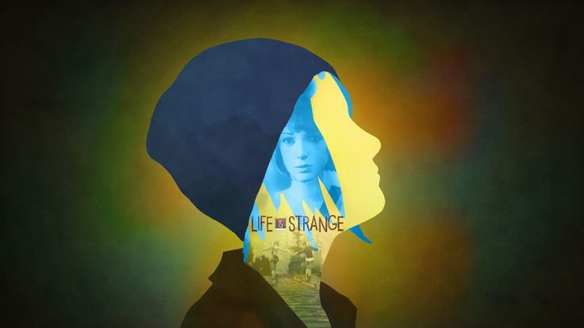
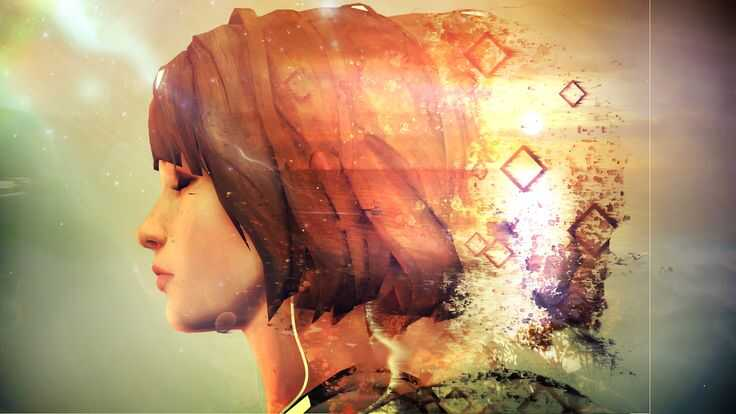

Life is strange
Bevezető
A Life is strange egy pillangó efektes epízódikus kaland jaték. A cselekmény Max Caulfieldre, egy 18 éves fényképész hallgatóra összpontosít, aki felfedezi, hogy képes bármikor visszatekerni az időt, ami minden választási lehetőségét a pillangóhatás megvalósítására vezeti. A játékos választásai az elbeszélést kibontakozás közben módosítják, és átformálják azt. A küldetések elágazó választási lehetőségeket használnak a beszélgetéshez.
Játékmenet
A játékot harmadik nézetben teszi lehetővé az irányítást. Az idő visszatekerése lehetővé teszi a játékos számára, hogy szinte minden döntését megváltoztassa. Helyet kapott pár a történet alaulására nagy befolyással rendelkező választás is, amik nem visszafordíthatóak. Gyakran emberi életek múlnak ezeken a választásokon. A játékos megvizsgálhatja a tárgyakat, és interakcióba léphet velük, ami lehetővé teszi a környezet megváltoztatását. Az időutazás előtt összegyűjtött tárgyak a játékosnál maradnak, emiatt lehet "csalni", sőt sokszor csak így kaphatjuk meg az elvárt kifejlettet. A játékos különböző helyszíneket fedezhet fel az Arcadia-öböl kitalált környezetében, és kommunikálhat nem játszható karakterekkel. Az esemény visszaállítása után a korábban megadott részletek felhasználhatók lesznek a jövőben. Bizonyos esetekben a párbeszéd választása rövid vagy hosszú távú következmények révén megváltoztatja és befolyásolja a történetet.Mindegyik választásnál rövid távon valami jó is rosszabbul alakulhat.
